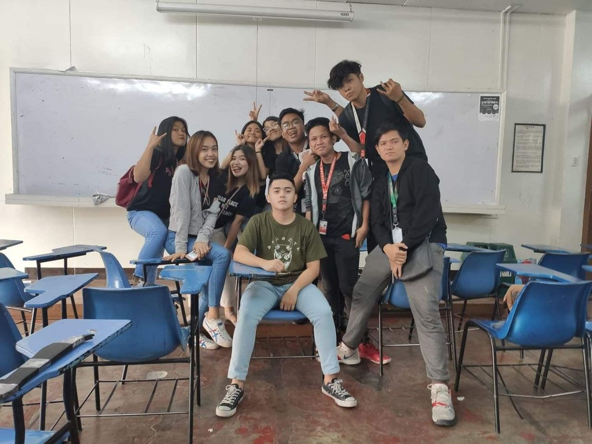
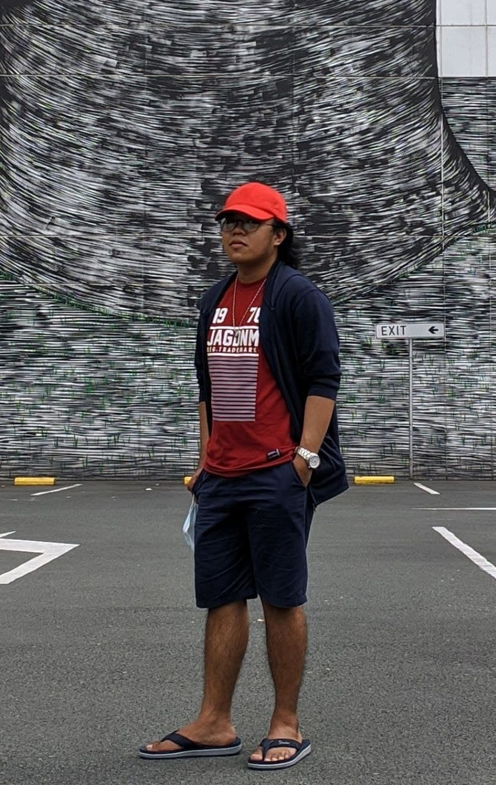

Teenage Years
I've spend my teenage years here in metro manila with my Grandmother, Little brother, and Grandfather because my mother and father decided to take me for the reason that they will leave this country to find a job abroad.1 By that, they explained to me a lot of things like when my mother left us the reasons behind all of that are my mother make a huge debt in terms of money and she didn't notice it until there are so many people charging her and she felt depressed that is why she leaves us.2 That is the reason why the two of them will go abroad leaving us two with our grandparents even though it hurts me a lot but I still understand why they have to leave us.2 Both of them goes to Singapore and had a decent job to support me and my brother also to pay their debt.4 I continued my studies here in Caloocan starting in grade 7 with that I have so many troubles in school because of my skin color, I am burnt and I have diabetes causing my neck to have some skin problem because of that I get too many criticisms.5 And that takes down my confidence as a student that is why I spend half of my teenage days being an introverted person and it was hard because compare to my childhood I was an extrovert.6 The transition from
extrovertto introvert was hard but having no friends make it a little easy but because of that I have a poor performance at school making my marks low on every subject but I still pass it with not more than 79 and not less than 75 but to make it short I have a 77 GWA.7 Though I am not a smart child I can do better than 77 GWA.8 Then my grade 9 days have come in this year I had met many people that became my friends with that I gained my self back.9 I performed better in academics and can now express myself better but the discrimination didn't stop even my friends tease me but even though it hurts my feelings I just keep telling my self thatMaybe they did not mean that and this is better than not having a friendby that I still have them as my friends.10 After having friends since grade 9 help me cope with my studies here I finished JHS rank 6 in our class.11 In my SHS I studied ICT at STI college Caloocan.12 Choosing my career path is not easy because I have struggled in identifying my field of expertise.13 I did choose ICT because I am good at computer games and they say that ICT-related courses do not have math.14 So that is why I indeed pursue this career.15 At first, I find ICT subjects troublesome mostly programming subjects because I don't have the slightest clue what is it.16 But as time goes by I am learning little by little what is programming is for thanks for the help of my teachers and some Indian YouTubers for their tutorial online.17 In this time I experience being good at one thing and that is in programming because maybe I am built for this career.18 Because in grade 12 I find programming fun and I like it a lot.19 Then after our job immersion, I got employed by government people.20 In that job, I experience being a personal IT and it was fun and I gained a lot of experience and learned a lot.21
College Years

The thing I feared the most in my life is studying in college.1 Because I think there is too much responsibility for it and failing is not an option.2 My parents put a lot of pressure on me in terms of my future but not on my grades.3 They just care about my future so that I must finish my study and never fail in college that is my mindset right now.4 I had Struggles choosing what university I will choose.5 I didn't continue on STI because they say that
University is much better than collegesso that is why I did researches what University has a good education in IT.6 That is when the Univesity of the East appears but it was my 2nd choice because I did consider our family status because tuition fees in UE can be troublesome for my parents.7 So that is why I first tried on PUP but I failed in their entrance exam.8 That is why even though the tuition fee in UE is expensive for us I still tell my parents that I want to study here but I expect that they will not agree with my idea.9 But they actually agree with it at first it shook me because I can't believe it.10 The downside is they have conditions.11 First is I will study hard to graduate.12 Second is I must not have vices.13 lastly is get a decent job when I graduate.14 I had agreed with them because I have trust in myself and I think I will not fail their expectation although I am not a fan of expectation what can I do I had accepted their terms.14 So that is why I am studying here at UE.15 College life here in UE goes very well so far I have met 9 peoples who are my friends which felt like my family.16 They are so dependable and they help me cope up with my studies that is why I am very thankful that I study here in UE manila instead of UE caloocan.17 Currently, My college life is at its best.18 Having a teacher that is good at teaching is a huge blessing in studying so that is why I haven't yet regretted coming to UE to entrust my college life.19 I hope I can finish all of it without failing that being said I will be doing my very best to finish your subject ma'am and hopefully get high grades to continue my scholarship here in UE.20